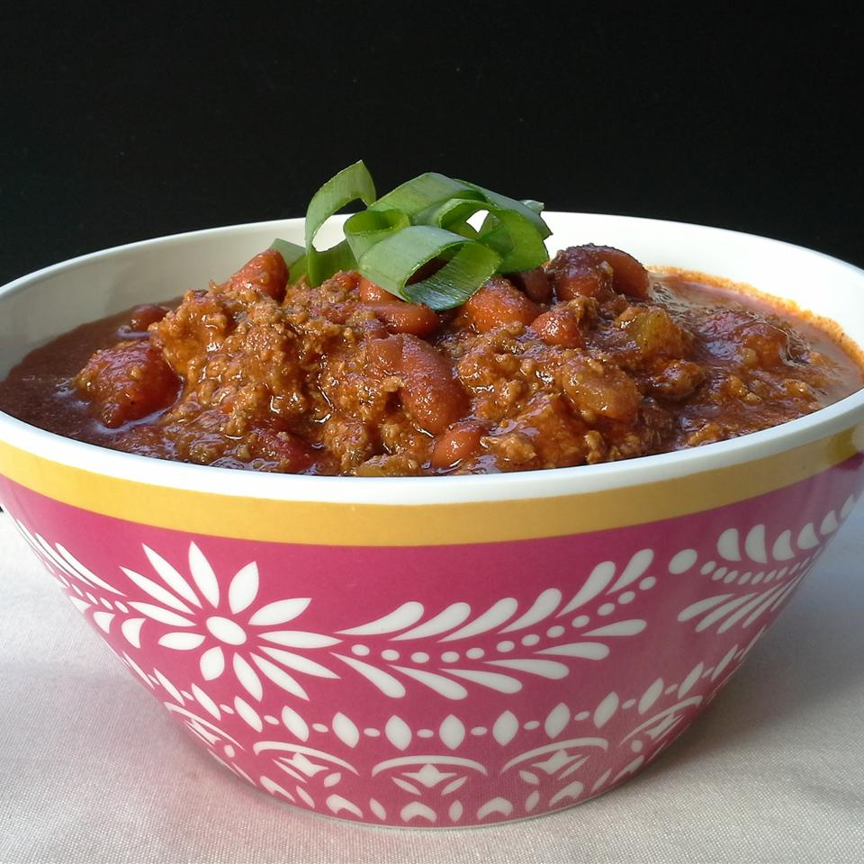

Flatlander Chili

Description
Easy to make, great anytime, and always a favorite.
Ingredients
- 2 pounds lean ground beef
- 1 (46 fluid ounce) can tomato juice
- 1 (29 ounce) can tomato sauce
- 1 ½ cups chopped onion
- ½ cup chopped celery
- ¼ cup chopped green bell pepper
- ¼ cup chili powder
- 2 teaspoons ground cumin
- 1 ½ teaspoons garlic powder
- 1 teaspoon salt
- ½ teaspoon ground black pepper
- ½ teaspoon dried oregano
- ½ teaspoon white sugar
- ⅛ teaspoon ground cayenne pepper
- 2 cups canned red beans, drained and rinsed
Steps
- Place ground beef in a large, deep skillet. Cook over medium-high heat until evenly brown. Drain, crumble, and set aside.
- Add all ingredients to a large kettle. Bring to boil. Reduce heat and simmer for 1 to 1 1/2 hours, stirring occasionally.